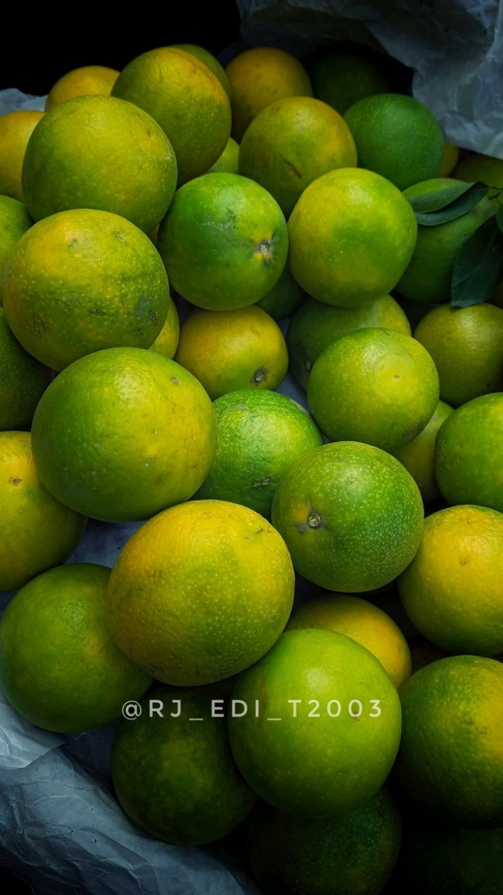

Mosambi (Sweet Lime) Cultivation Guide

1. Climate & Soil
Thrives in tropical and subtropical climates with moderate rainfall.
Well-drained loamy soil with pH 6.5–7.5 is ideal.
2. Land Preparation & Planting
Deep plowing followed by leveling and marking pits.
Pits: 60x60x60 cm filled with soil and compost mixture.
Spacing: 5m x 5m (approx. 175 trees/acre).
Planting season: June–August or February–March.
3. Irrigation
Irrigate every 7–10 days in summer; reduce in rainy season.
Drip irrigation helps conserve water and improve yield.
4. Fertilizer Schedule
Year-wise NPK and FYM doses increase with tree age.
Young tree: 10 kg FYM + 50g N + 25g P + 25g K.
Mature tree: Up to 40 kg FYM + 600g N + 200g P + 400g K annually.
5. Pest & Disease Management
Pests:
Citrus psylla, fruit fly — control with neem oil or insecticides.
Diseases:
Gummosis, canker — use copper fungicides and proper drainage.
6. Investment Breakdown (Per Acre)
Input
Estimated Cost (INR)
Planting Material
₹7,000 – ₹10,000
Fertilizers & FYM
₹5,000 – ₹7,000
Pesticides
₹2,000 – ₹3,000
Irrigation Setup
₹6,000 – ₹10,000
Total Investment
₹20,000 – ₹30,000 per acre
7. Yield & Harvesting
First harvest in 3–4 years; peak yield from 6th year onward.
Annual yield: 10–15 tons/acre (mature trees).
8. Market Rate & Profit
Average market price: ₹15 – ₹30 per kg.
Gross returns: ₹1,50,000 – ₹4,50,000 per acre.
Net profit: ₹1,20,000 – ₹4,00,000 per acre after maturity.